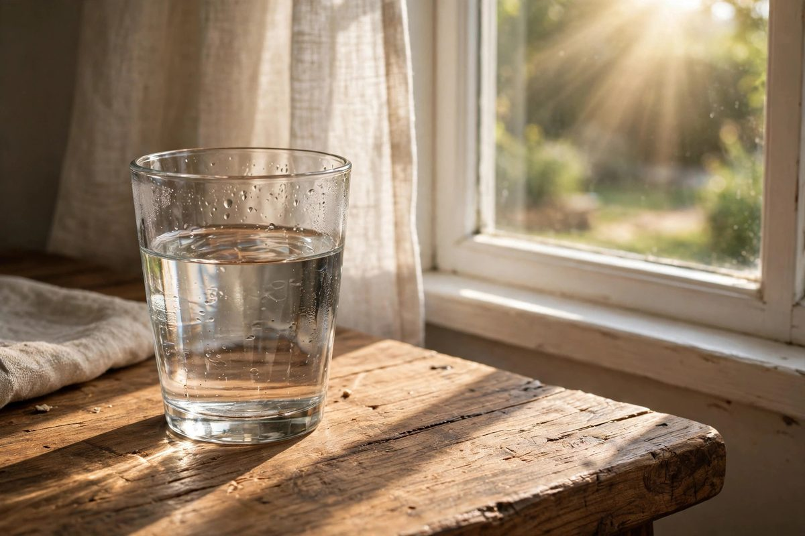

How Much Water Should You Drink Per Day?
The guidelines behind daily water intake, why there is no single magic number, and how to find yours.
You have probably heard that everyone should drink eight glasses of water a day. It is a memorable rule, but it is not based on a precise scientific finding, and it ignores the fact that a 50 kg person and a 100 kg person have very different needs. The real guidance is based on body weight, activity and climate, and it gives a range rather than a single number. This guide explains the numbers behind the advice.
Where the eight-glasses idea comes from
The eight-glasses rule, about 2 litres, has been repeated for decades, and it probably comes from a rough rounding of older dietary guidance. It is not a bad starting point for an average adult in a temperate climate, but it is not personal: it is too much for a small, sedentary person and too little for a large, active one in the heat. The more useful approach is to calculate from your own weight and life, which is what our calculator does, and then adjust by how you feel.
The weight-based guideline
A widely used guideline is 30 to 35 ml of water per kilogram of body weight per day for total water intake, including water from food. For a 60 kg person that is 1,800 to 2,100 ml. For an 80 kg person it is 2,400 to 2,800 ml. For a 100 kg person it is 3,000 to 3,500 ml. These are starting points for healthy adults in temperate conditions, not prescriptions. Children need relatively more per kilogram than adults, and older adults often need reminders to drink because their sense of thirst weakens with age.
What official guidance says
Different countries give different guidance, because they use different methods, but the broad picture is consistent. The European Food Safety Authority suggests about 2.5 litres a day of total water for men and 2 litres for women, from food and drinks combined. The US National Academies suggest higher totals, about 3.7 litres for men and 2.7 litres for women, again including food. These are adequate intake figures for average adults, not targets everyone must hit exactly, and individual needs vary widely around them.
Signs you are drinking enough
Your body gives useful feedback. Pale straw-coloured urine is a good sign. Dark yellow urine, a dry mouth, headache, tiredness and dizziness can all suggest you need more. Thirst is a reasonable guide for most healthy people, though it becomes less reliable with age and during exercise, when it is better to drink on a schedule. If you rarely need the toilet during the day, or your urine is consistently dark, increase your intake gradually and see whether the signs improve.
Signs you are drinking too much
It is possible to drink too much water, though it is uncommon in everyday life. Drinking very large volumes in a short time, especially during endurance exercise, can dilute the blood's sodium and cause hyponatraemia, with symptoms such as headache, confusion, nausea and swelling. If your urine is completely clear all day and you are going to the toilet very often, you may be drinking more than you need. Spread intake through the day, drink to thirst as well as to a target, and do not force large volumes at once.
Your number in glasses and bottles
Translate your target into containers you actually use. A target of 2,500 ml is ten glasses of 250 ml, five bottles of 500 ml, or three and a third bottles of 750 ml. A target of 2,000 ml is eight glasses, four bottles of 500 ml, or two and two-thirds bottles of 750 ml. A target of 3,000 ml is twelve glasses, six bottles of 500 ml, or four bottles of 750 ml. The container matters because it turns an abstract number into a visible one: a 1 litre bottle filled twice is 2 litres, and you can see at a glance whether you are on track by mid-afternoon. Choose the container that fits your day, fill it in the morning, and count the refills.
Frequently Asked Questions
Is eight glasses of water a day correct?
It is a rough average for an average adult, not a personal target. Weight, activity and climate change the number a lot.
How do I know if I drink enough?
Pale straw-coloured urine, regular toilet trips, and no persistent thirst or headache are good signs.
Can you drink too much water?
Yes, though it is uncommon. Very large volumes in a short time can dilute blood sodium. Spread intake through the day.